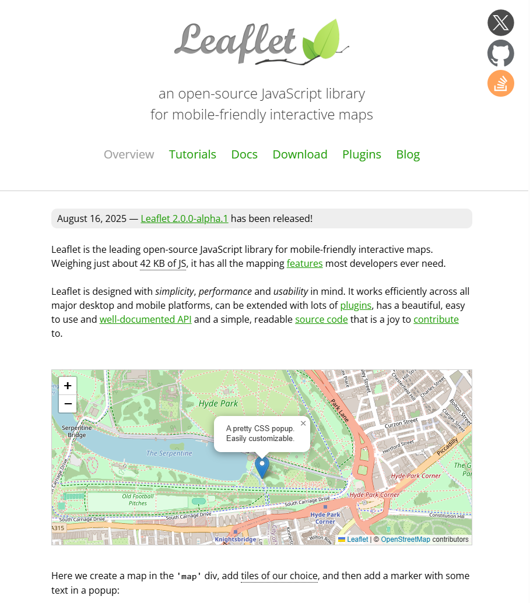
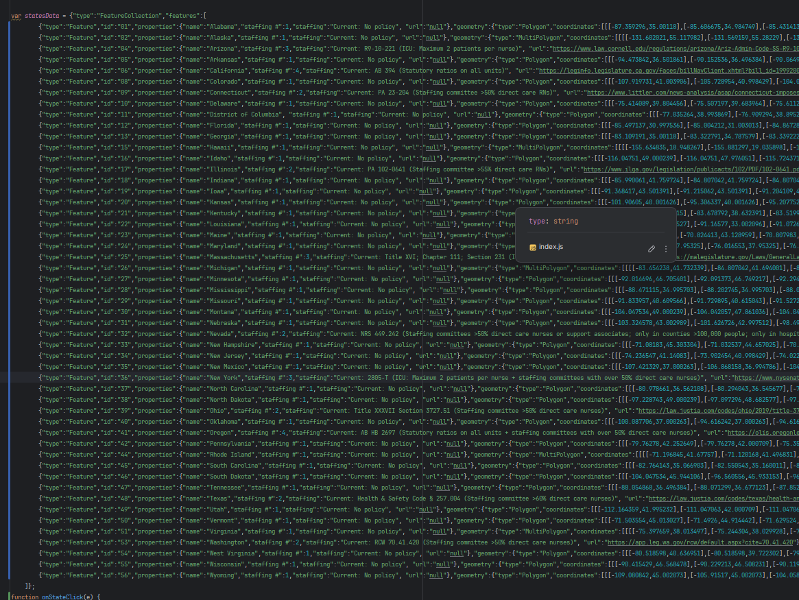
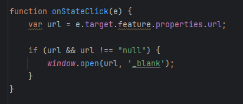
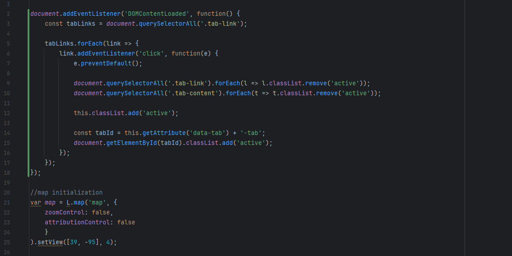
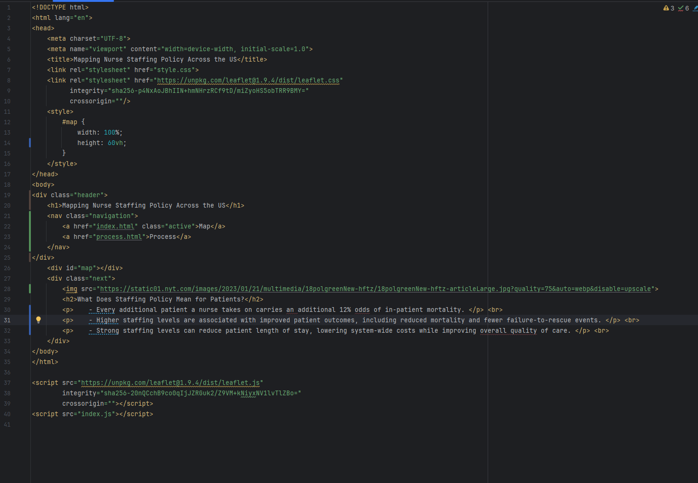

I researched the map by using "RN Nurse-to-Patient Ratios by State" as a starting point. From there, I used various state legislation websites to verify the information, which are linked in the map.
The website was created with a combination of HTML, CSS, and JavaScript (JS). HTML is used to describe the elements of the website, including text, images, and links. CSS is used for styling HTML. With CSS I added borders, margins, and specified fonts. Ultimately, I chose to keep the site relatively simple.
JS is used to add interactivity to the website.
This posed the biggest challenge in making this website, as I was inexperienced, and it required extensive research as well as trial and error.
I started by researching various JS libraries that would allow me to create interactive data.
I looked into D3js for a time, but found it to be too advanced for my
first website, and potentially overkill. I also looked into Charts.js but
scrapped the idea when I decided that an interactive map would be my focus. I ultimately settled on Leaflet
(see below) due to its simple implementation and close fit to my needs.

I started by following the quick start tutorial
for Leaflet, followed by the chloropleth map tutorial. I also used W3Schools
to help me with basic HTML, CSS, and JavaScript syntax.
I used the GeoJSON data provided by Leaflet to create an interactive overlay of the individual states. GeoJSON is a data format
that allows you to store and display geographic data with custom parameters. Below is a screenshot of the GeoJSON data format.
To the far left (in blue) is the "geometry" parameter, provided by Leaflet, which contains coordinates and boundaries for each state.
Everything in green is project-specific data, which includes my custom parameters: "State," "Staffing #," and "Staffing policy description."
"Staffing #" is a numerical description of the staffing policy, used to assign colors to the map, as shown in the map key.
"Staffing description" is what the user sees when they hover over a state. In addition, I added a parameter containing a URL of each state's
policy (if it exists).

With help from Leaflet documentation, I used Javascript to create functions that allow the user to interact with the map. The function below
is called into action anytime the user clicks on a state, sending the user to the corresponding state's policy page if a URL exists in the GeoJSON data, and doing nothing
if it doesn't.

Here is another function, allowing the user to switch between the process page, and the map page.

Here is some early HTML code for the main "map" page.

All code is available on my GitHub repository: here (look into the index.html, process.html, index.js, and style.css files for my code).
I set out to learn more about coding, data visualization, and health policy. Learning about coding and data visualization went hand in hand, as JavaScript tools allow you to create (with a good deal of extra effort) data that is more interactive than what is typically found in journal publications. I learned how to research and utilize JavaScript libraries like D3, Chart, and Leaflet, in addition to basic skills in HTML, CSS, and JavaScript. Ultimately, I am very proud of how the actual map turned out, and it achieves all the basic functionality that I had wanted it to. Regarding health policy, I think I learned a significant deal about the challenges to researching policy in general. Legislation databases are not intuitive or easy to search, and I found it hard to get all my information from one place due to a lack of an easy to use centralized database.
When I set out to make this project, I went in with the goal of including proposed policies on the map. However, research for this was difficult, and the extra parameters necessary for the GeoJSON data created a workload that was unrealistic for the timeframe I gave myself. I also only focused on hospital related legislation; I found that there was a large body of outpatient facility legislation that was simply too dense to tackle for this project. Additionally, I would have liked to spend a little more time working with CSS to ensure that the site looks good and works in multiple window size configurations. I found that viewing the window from anything but a full screen cut off elements from the map, and I would guess that this problem exists on mobile platforms as well. I would have also liked to have found a color scheme that worked for the site; I tried a few, but found that my poor aesthetic choices were doing more harm than good, so I chose to keep it simple with a basic interface. With more time, I would have tried to find tools, templates, or educational materials for creating more aesthetically pleasing sites.